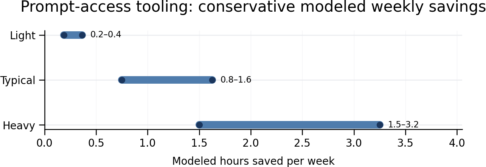

Estimated Weekly Time Saved by Prompt-Access Tools
Best estimate: ~1.2 hours per week for a typical, active AI-using knowledge worker. Realistic range: 0.75–1.6 hours per week.
Light users may save only 0.2–0.4 hours, while heavy users with many repetitive AI interactions could save 1.5–3.3 hours per week.
This estimate covers the incremental value of quick access to reusable, high-quality prompts—not the much larger productivity benefit of generative AI itself.
Compact calculation
For a typical active user:
15 AI interactions/day × 5 days × [30–60 seconds saved finding/writing a prompt + 10–20% fewer retries × 1–1.5 minutes per avoided retry] = approximately 0.75–1.6 hours/week
A practical midpoint is:
75 weekly interactions × [45 seconds direct saving + 15% × 75-second avoided retry] = 1.17 hours/week

Modeled weekly saving by user type
| User type | AI interactions/day | Modeled weekly saving |
|---|---|---|
| Light | 5 | 0.2–0.4 hours |
| Typical active user | 15 | 0.75–1.6 hours |
| Heavy user | 30 | 1.5–3.3 hours |
Why this range is credible
- Good prompting can reduce iteration, but the size of that effect has not been directly measured for cursor-adjacent prompt tools. A qualitative CHI study found that non-expert users often struggled to translate intentions into effective prompts and entered repeated cycles of testing and repair. This supports the mechanism—but not a precise time-saving percentage. (Zamfirescu-Pereira et al., CHI 2023)
- Controlled studies show that generative AI can materially accelerate suitable knowledge tasks. In an experiment with 453 professionals completing writing tasks, ChatGPT reduced completion time by approximately 40% and increased assessed quality by 18%. However, that is the benefit of AI assistance overall—not of easier prompt access—so this estimate does not apply the 40% figure to weekly working hours. (Noy and Zhang)
- The broader AI productivity effect provides an upper boundary, not a direct estimate. In an experiment involving consultants, participants using GPT-4 completed tasks 25.1% faster, completed 12.2% more tasks, and produced substantially higher-quality work on tasks within the model’s capability boundary. Performance could deteriorate on tasks outside that boundary. (Dell’Acqua et al., HBS working paper)
- Real-world effects are normally smaller than controlled task-level results. A field study of more than 5,000 customer-support agents found an average productivity increase of approximately 14%, with larger gains among less-experienced workers. Again, this reflects the complete AI system, not prompt templates alone. (Brynjolfsson, Li and Raymond, NBER)
- Reusable prompts plausibly save time in two places: avoiding repeated prompt construction and avoiding some poorly specified first attempts. The estimate deliberately assumes only 30–60 seconds of direct saving per interaction and that templates prevent retries in just 10–20% of interactions. It does not include speculative “context-switch recovery” multipliers or count the full AI-generated task saving.
Evidence versus assumptions
Directly supported by research
- Generative AI can reduce completion time on suitable writing and consulting tasks.
- Prompting is frequently iterative, especially for non-experts.
- Benefits vary significantly by task, experience level, and whether the task fits the model’s capabilities.
Modeled assumptions—not directly measured
- 5, 15, or 30 AI interactions per day.
- 30–60 seconds saved by cursor-adjacent access.
- 10–20% of interactions avoiding one retry.
- 1–1.5 minutes saved per avoided retry.
- Five working days per week.
Bottom line
For an organization evaluating a tool like Promptly, a defensible business-case assumption is about one hour per active user per week, with 1.2 hours as a reasonable midpoint. Claims substantially above 2 hours per week for an ordinary user should require actual usage telemetry—such as prompts launched, prompt-editing time, retry rates, and successful first-response rates—because existing research does not directly establish that level of saving for prompt-access tooling alone.